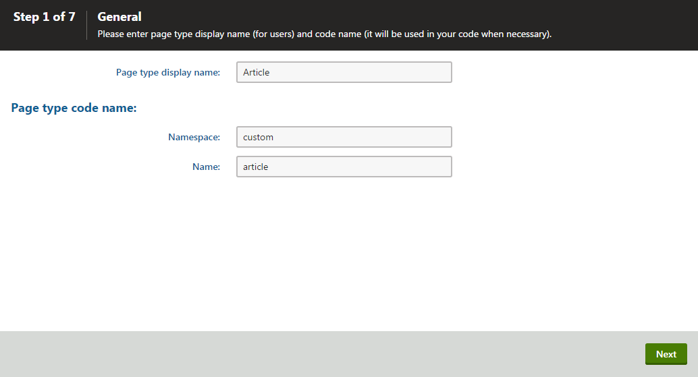
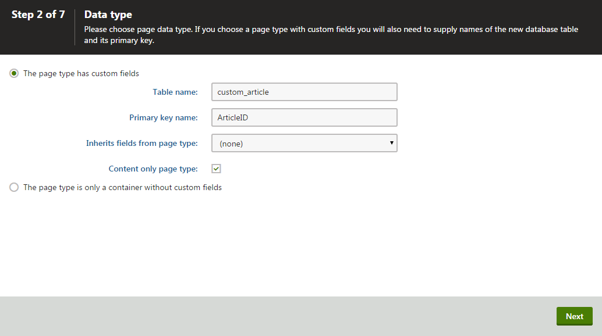
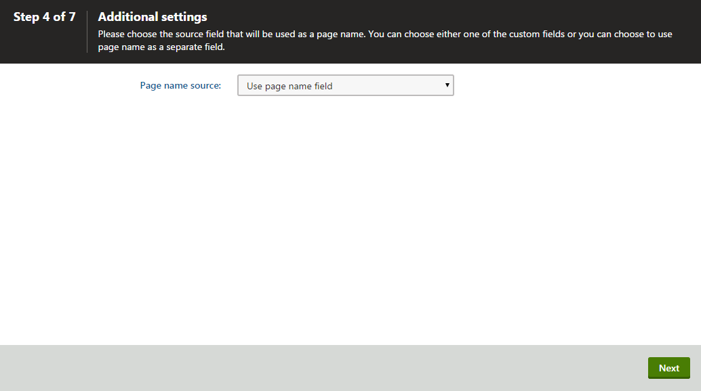

Creating content only page types
Content only page types are suitable for pages on MVC sites whose only task is to hold content, such as individual news articles. Unlike standard page types, they don't have a representation on the website. Unlike custom tables, you can still use them to create a hierarchical data structure that supports workflow and versioning. Content only pages:
Are not based on page templates.
Do not provide configuration options related to the live site presentation (such as navigation and URL properties).
Do not have a presentation URL by default. You can specify a URL pattern for the page type to allow content editors to display pages in preview mode via the administration UI.
Creating content only page types
Open the Page types application.
Click New page type. A New page type wizard opens.
Step 1
Fill in the values:
Page type display name - the system displays this name to users in the administration interface
Namespace: namespace distinguishes your page types from the default system types that use the cms namespace. For example, you can use your site name as the namespace.
Name - page type identifier appended to its namespace

Creating a content only page type
Click Next.
Step 2
Enter a Table name for the database table that stores the page type data.
Enter a Primary key name for the table.
(Optional) Select if you want the page to to Inherit fields from page type.
Enable Content only page type.

Creating a table for the content only page typeClick Next.
The wizard creates the database table.
Step 3
Click New field to define individual fields of the page type (columns of the table).
For each field, enter the values, click Save and repeat the procedure until you have defined all the listed fields.
Click Next.
You can also define system fields that will be displayed when editing pages of this type on the Form tab. You can do this using the Field type drop-down list when creating a new field. Select Page field and you can then choose from the following two groups of system fields:
Page fields - offers system fields of pages.
Node fields - offers system fields of content tree nodes.
Page or node system fields will then be offered in the Field name drop-down list. If you leave the Display field in the editing form check-box turned on, the field will be visible on the page's Form tab.
Step 4
Choose the field that will be used as the name for pages of this type. Pages of this type will use the value of the field in site navigation and in the Page application's content tree. Only Required 'text' fields are available in the drop-down list.

Selecting a source field for the page type nameClick Next.
Step 5
Select the page types that will be supported as parents for pages of this type in the Page application's content tree.
Click Add page types and select a specific page type.
Click OK.
Click Next.
Step 6
Assign the page type to all websites on which you want to use it.
Click Add sites.
Check the appropriate websites in the selection dialog.
Click OK.
Click Next.
Step 7
The wizard has finished the configuration of the new page type.
Click Finish. You have created a new page type.
Now, you may want to:
Specify URL pattern for content only pages – to allow content editors to display content only pages on the live site and in the preview mode.
Create transformations for the page type – to define how the page type's content is rendered on your pages.
Create alternative forms for the page type – to create alternative editing forms for the page type.
Extend the page type's listing filter – editors use page listing to perform multiple page (batch) operations in the Pages application.
Limit the pages users can create – this way you can control where on the site users create new pages.
How content in page types is stored
The new page type has its own database table for its specific fields. Each page is stored in three tables: CMS_TREE (tree structure), CMS_Document (page properties, metadata and content defined on the Page tab) and the custom table - for example, CUSTOM_Article.
The system automatically ensures all operations are performed correctly on these tables. The advantage of this storage is that it is very fast and you can easily write standard SQL SELECT queries to retrieve data from the Microsoft SQL Server database.